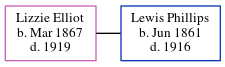

Lizzie Phillips (née Elliot) 1867 - 1919
[ Home ] | [ Calendar ] | [ Surnames Index ] | [ Census Index ] | [ Family History ]Lizzie Elliot, the wife of Lewis W Phillips (the great-great-uncle of Michele Copp (née Phillips)), was born in Social Circle, Walton County, Georgia, USA in Mar 18671,2,3,4. She and married Lewis in Fulton, Georgia, USA on Oct 11, 18885.
During her life, she was living in Atlanta Ward 1, Fulton, Georgia in 19001; in Atlanta Ward 3, Fulton, Georgia in 19102; in Atlanta, Georgia, USA in 19146; and in Cochran, Bleckley, Georgia in 19203.
She died in 1919 in Atlanta, Fulton County, Georgia4 and was buried there after 19194.
Citations
- 1900 United States Federal Census Online publication - Provo, UT, USA: MyFamily.com, Inc., 2004.Original data - United States of America, Bureau of the Census. Twelfth Census of the United States, 1900. Washington, D.C.: National Archives and Records Administration, 1900. T623, 1854 rolls.
- 1910 United States Federal Census Online publication - Provo, UT, USA: The Generations Network, Inc., 2006. For details on the contents of the film numbers, visit the following NARA web page: NARA.Original data - United States of America, Bureau of the Census. Thirteenth Census of the Unit
- 1920 United States Federal Census Online publication - Provo, UT, USA: MyFamily.com, Inc., 2005. For details on the contents of the film numbers, visit the following NARA web page: NARA. Note: Enumeration Districts 819-839 on roll 323 (Chicago City.Original data - United States of America
- U.S., Find A Grave Index, 1600s-Current Ancestry.com Operations, Inc.
- Georgia, Marriage Records From Select Counties, 1828-1978 Ancestry.com Operations, Inc.
- U.S. City Directories, 1822-1995 Ancestry.com Operations, Inc.
Family Tree
Generated by ged2site. Last updated on Jun 6, 2024